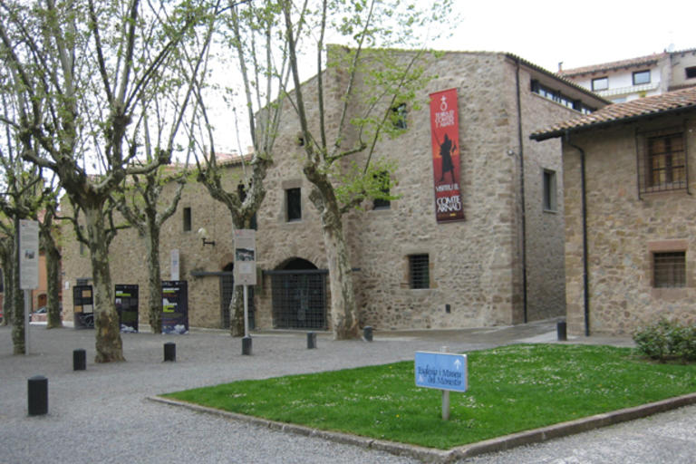

Visita · Sant Joan
Actualment, el palau de l'Abadia totalment rehabilitat, acull l'Oficina de Turisme, el Centre d'Interpretació del Mite del Comte Arnau , que forma part del projecte Terra de Comtes i Abats ,…